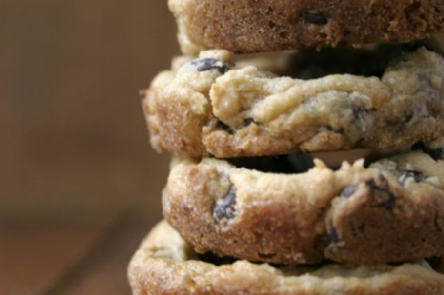

Loaded Chocolate Pudding Cookie Cups

- 1.5 cups - wheat flour
- 1/2 tsp - bicarbonate of soda
- 1 large - eggs
- 1/2 cup - sucrose
- 3 tbsp - instant vanilla pudding
- 1/2 cup - brown sugar
- 1/2 tsp - salt
- 24 servings - fine sea salt
- 2 cups - semi sweet chips
- 1/2 cup - unsalted butter
- 1/2 tsp - vanilla
Ingredients:
- In a large mixing bowl, whisk together the dry ingredients (flour, pudding mix, soda and salt). Set aside.In a large mixing bowl of a stand mixer, cream butter for 30 seconds. Gradually add granulated sugar and brown sugar and cream until light and fluffy.
- Add egg and vanilla and mix until combined.
- Add dry ingredients and mix on low just until incorporated. Stir in chocolate chips.Scoop the dough into 1,5 tablespoon size balls and place on a plate or sheet. Cover with saran wrap and chill at least 2 hours or overnight.When ready to bake, preheat oven to 350 degrees.
- Place the cookie dough balls into ungreased muffin pan. Sprinkle with sea salt.
- Bake for 9 to 10 minutes, or until you see the edges start to brown.
- Remove the pan from the oven and let sit for 10 minutes before removing onto a cooling rack.Top with ice cream and a drizzle of chocolate sauce.